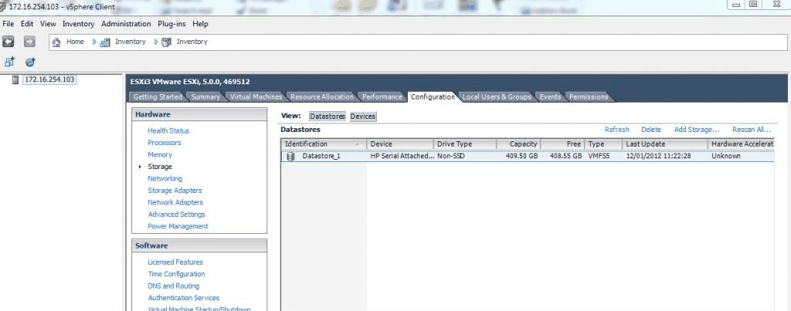

Virtualisation · Data-Center Infrastructure
Software-Defined Data Center (SDDC) — Design & Implementation
Designed and implemented a working software-defined data center on physical hardware, virtualising compute, storage and networking and hosting directory, cloud-application, web and e-mail services.
System overview

Author
Mohammed Mahyoub
Scope
Team project covering design, implementation, configuration, testing and technical documentation, alongside a study of SDDC architecture, storage networking (DAS/NAS/SAN, FC, IP SAN), network virtualisation and cloud models.
Storage
FreeNAS 11 on a dedicated server: ZFS volumes exported over iSCSI (portal, authorised initiators, CHAP authentication, target–extent LUN mapping) and attached to ESXi as shared storage.
Compute
VMware ESXi 5.5 on an Intel Core i7 host (20 GB RAM) managed with vSphere Client, running Windows Server 2008 R2 virtual machines with planned CPU, memory and thick/thin disk provisioning; storage served by an AMD Opteron server with SAS and SATA disks.
Network
ESXi standard vSwitch with network labels and optional VLAN IDs, plus NIC teaming (active/standby), on a switched LAN with Wi-Fi access.
Services
AD/DNS/DHCP domain controller; Citrix XenApp 6.5 farm publishing applications to domain users via Citrix Receiver; AppServ web stack (Apache, PHP, MySQL); Exchange 2013 with OWA/ECP, PowerShell mailbox provisioning, groups, connectors and transport rules.
Engineering rationale
Storage-to-service dependency
FreeNAS exports ZFS-backed storage as an iSCSI target; ESXi attaches the LUN as a datastore. Virtual machines then use compute and network resources to host directory, application-delivery, web and email services. This dependency chain makes storage faults visible far above the storage layer.
Networking and identity
A standard vSwitch provides VM connectivity and active/standby NIC teaming. AD, DNS and DHCP support domain users and service discovery; Citrix, the AppServ stack and Exchange provide distinct application services. Configuration screenshots document the integration steps.
Reading historical configurations
Version numbers describe the documented implementation. The repository is a record of the engineering work, not a recommendation to expose those historical server versions as a new public production deployment. The new diagram is a simplified logical view.

Evidence and validation
Suggested evidence checks for reviewing this work. These are not claimed pass results.
- iSCSI target/LUN/datastore chain
- VM resource and vSwitch configuration
- Directory/DNS and application access
- Storage/network interruption and recovery evidence
Source gallery
Figures from the existing project repository, public notebook outputs, or corresponding LinkedIn project media. Original screenshots and existing explanatory figures retain their source context.


